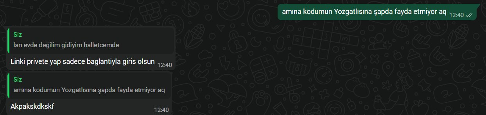

14. İçim Yanar
⬇️ Şarkıyı İndir
Simge - Kalpsiz Bir Serseri (Akustik Live Versiyon)_compressed
⬇️ Şarkıyı İndir
Gökhan Kırdar Dayan Kalbim (Alatürka) 2008 (Official Lyric Audio) #GökhanKırdar #DayanKalbim_compressed.mp3
⬇️ Şarkıyı İndir
Özel İçerik

